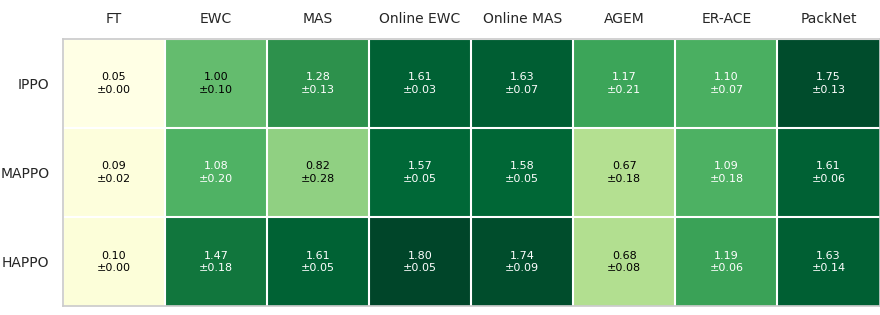
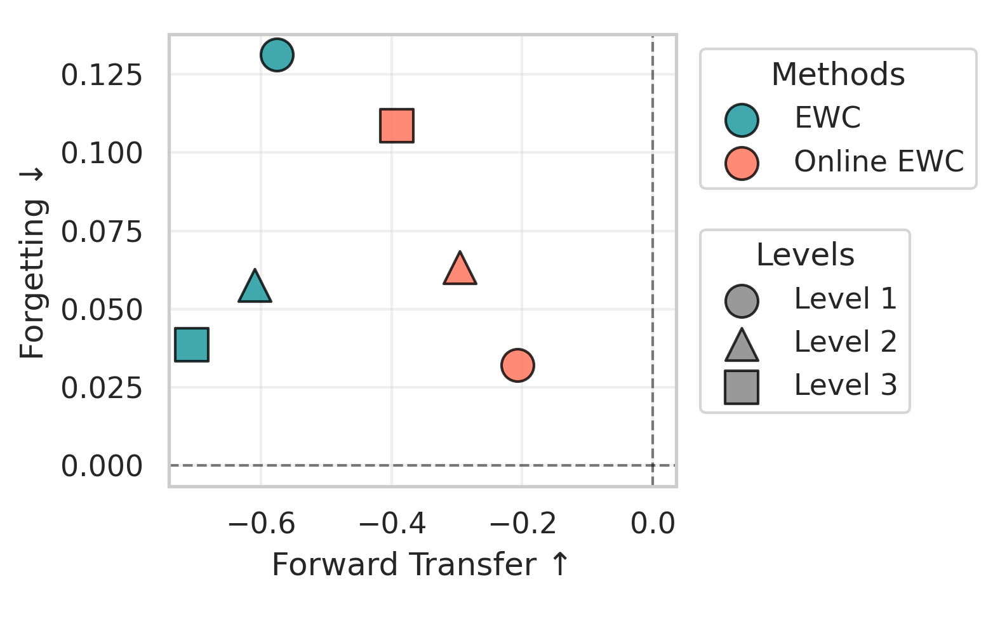

Lifelong learning,
one kitchen at a time.
MEAL — Multi-agent Environments for Adaptive Learning. A GPU-accelerated, fully JAX benchmark that trains agents on long task sequences in hours on a single GPU.

Much of existing research evaluates on 3–10 tasks because CPU-bound simulators make longer runs impractical, and continual learning in cooperative multi-agent settings is largely unexplored. MEAL closes both gaps and shows that long task sequences reveal failure modes that simply never appear at small scale.
A first, on two fronts
The first benchmark for continual multi-agent RL, and the first continual-RL benchmark with hardware-accelerated execution.
Endless kitchens
Procedural task generation with scalable difficulty — a near-infinite supply of uniquely solvable kitchen layouts.
Scale changes the story
Conclusions shift as sequences lengthen, and retaining cooperative behavior is a distinct challenge that worsens with more agents, harder tasks, and changing partners.
Kitchens, cooked to order
Every layout is built on the fly and validated so both agents can complete at least one cook–deliver cycle. Four steps, infinitely many kitchens.

Draw an empty room with outer walls, sized from the difficulty range.

Inject the interactive tiles: onion pile, plate pile, pot, and delivery counter.

Add internal walls until obstacle density matches the target level.

Drop in the chefs, then validate the layout and prune unreachable tiles.
Turn up the heat
Bigger grids and denser walls mean longer paths, tighter chokepoints, and split kitchens, forcing agents from solo cooking into genuine division of labor.
Level 1
EASY
Compact, items close together. Agents can often finish the task solo, with little coordination.
Level 2
MEDIUM
Stations spread out and chokepoints appear, so agents must coordinate movement and avoid blocking.
Level 3
HARD
The map often splits into regions; no one agent can cook alone. Ingredients must pass across counters.
Extending JaxMARL beyond the kitchen
MEAL builds on JaxMARL to bring continual learning to four cooperative multi-agent environments. Overcooked is the primary domain; the remaining three show that the benchmark generalizes across fundamentally different cooperative settings.


Findings
Length separates the field
The longer the sequence, the further methods separate. PackNet strikes the best balance — top average score at every level with near-zero forgetting — while a short benchmark would hide most of this spread.
Too many cooks
Throughput peaks at two or three chefs, then declines as the kitchen crowds. Every added agent makes continual coordination harder to learn and to retain.

